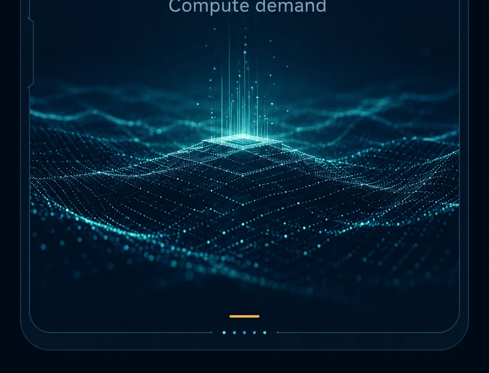

01 / AI Stack
AI Models
Compute demand

Core pressureCompute demand
System effectMore model scale, more infrastructure load
Downstream resultPressure moves from models to chips and manufacturing
AI demand begins at the model layer, but it quickly forces changes all the way down into physical hardware.